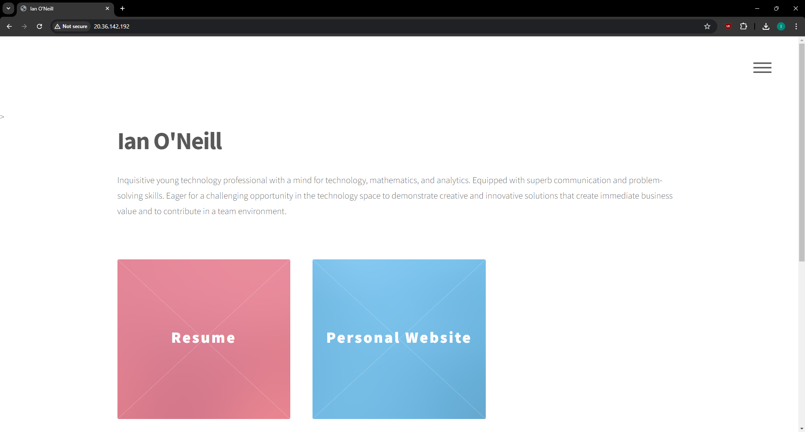

Personal Website
Project | Repository
This is the website you're on now! This project began by developing the website, utilizing technologies such as HTML, CSS, and JavaScript to create a user-friendly, appealing, and responsive website for visitors to interact with. After that, the website needed to be deployed. This involved provisioning an appropriate VM on Microsoft Azure, installing and configuring Apache to serve the site, obtaining a SSL certificate to enable HTTPS, acquiring a domain, and configuring the DNS record to point the domain to my server. I also utilized Azure security groups to restrict traffic, as well as running Lynis to audit the security of the system and make appropriate adjustments to improve the security of the server.
However, this is a project that will never truly be done! As my portfolio expands and my career grows, so to will the site. Maintaining and expanding the site to incorporate changes will be a perpetual task to ensure it stays up to date.